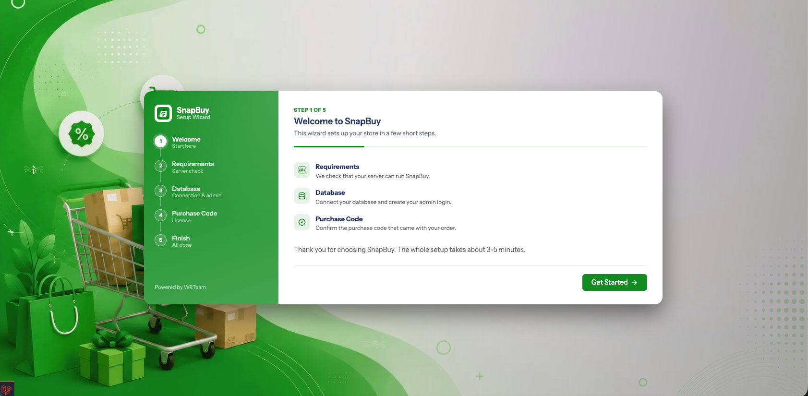
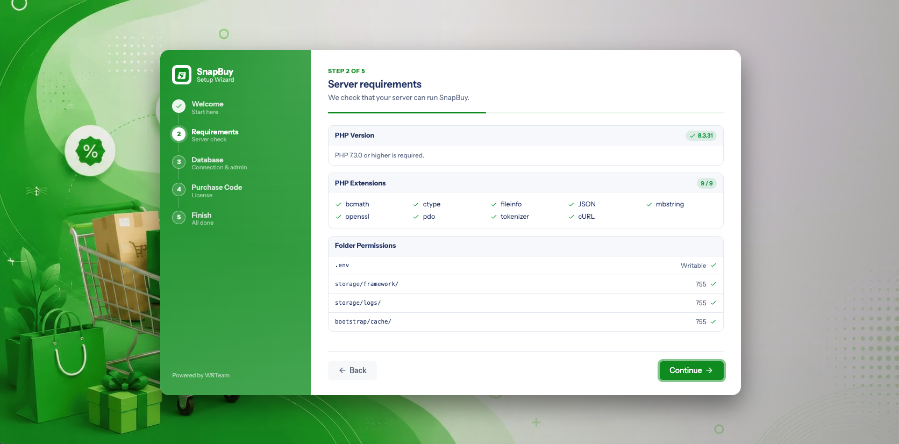
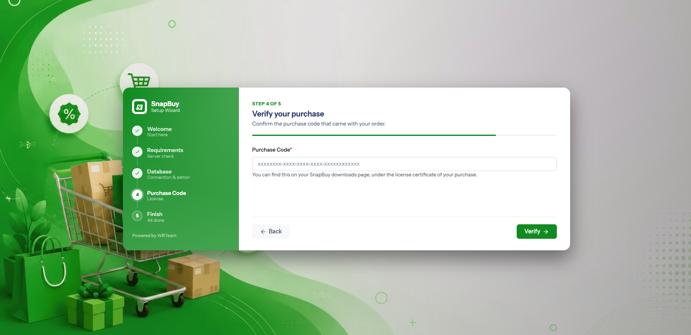
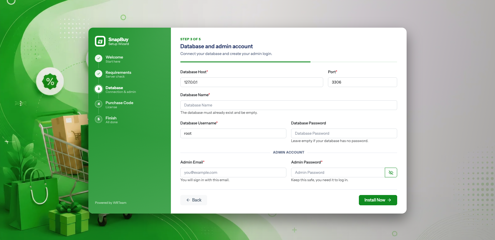
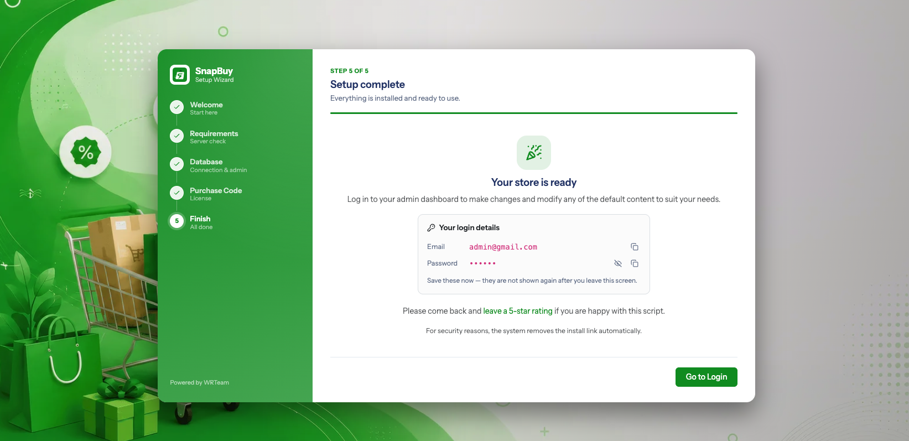

Panel Installation
This is the live installation. Before starting, confirm you have completed:
- Server Requirements
- Create a Subdomain — with SSL working
- PHP INI Settings
Read this before you begin
The installer runs migrate:fresh, which drops every table in the database it connects to. Create a brand-new, empty database for SnapBuy. Never point the installer at a database that already holds data.
Step 1 — Upload the files
Upload the SnapBuy admin panel package to your server and extract it into the directory your hostname points at.
sudo mkdir -p /var/www/snapbuy
cd /var/www/snapbuy
# transfer the archive here, then:
unzip snapbuy-admin.zip
rm snapbuy-admin.zipTransfer the archive with scp or SFTP:
scp snapbuy-admin.zip user@your-server:/var/www/snapbuy/Extract on the server, not locally
Uploading thousands of individual files over FTP is slow and often leaves files missing. Always upload the single archive and extract it on the server.
Step 2 — Create the database and user
If you followed Server Setup this is already done. Otherwise:
sudo mysql -u root -pCREATE DATABASE snapbuy CHARACTER SET utf8mb4 COLLATE utf8mb4_unicode_ci;
CREATE USER 'snapbuy'@'localhost' IDENTIFIED BY 'a-strong-password';
GRANT ALL PRIVILEGES ON snapbuy.* TO 'snapbuy'@'localhost';
FLUSH PRIVILEGES;
EXIT;Record the database name, username and password — the installer asks for all three.
Password characters
Use a password made of capitals, lowercase letters, numbers and @ or _. Some other symbols break the .env parser and cause a "could not connect" error even when the credentials are correct. If a connection fails and you are certain the details are right, regenerate the password without exotic symbols.
Step 3 — Set file permissions
The installer checks four paths. Set them before you start:
cd /var/www/snapbuy
sudo chown -R www-data:www-data .
sudo chmod -R 755 .
sudo chmod -R 775 storage bootstrap/cache
sudo chmod 644 .envReplace www-data with apache on AlmaLinux / RHEL.
Step 4 — Prepare .env
Copy .env.example to .env, then add this line:
INSTALL_MODE=serverThis line is mandatory on a live server
SnapBuy only runs the migrations, seeders, Passport key generation and the storage symlink when INSTALL_MODE=server. Without it, the wizard reports success but leaves you with an empty database and a broken panel.
Step 5 — Open the installer
Visit your panel over HTTPS:
https://admin.yourstore.comYou are redirected to the installation wizard.

Always use https://
The installer saves whatever address you visit it on as APP_URL. Installing over http:// bakes the wrong scheme into your configuration and causes mixed-content and callback failures later.
Step 6 — Requirements check
The wizard verifies your PHP version, all seventeen extensions, and the four writable paths.

Every item must be green. If something fails:
| Failure | Fix |
|---|---|
| PHP version | Install PHP 8.3+ and point PHP-FPM at it |
| A red extension | sudo apt install php8.3-<name> then restart PHP-FPM |
.env not writable | chmod 644 .env and check ownership |
storage/ or bootstrap/cache/ | chmod -R 755 and check ownership |
Fix the issue, then click Try again — you do not need to restart the wizard.
Step 7 — Purchase code
Enter the Envato purchase code for your SnapBuy licence. It is validated online, so your server must be able to make outbound HTTPS requests.

"Invalid code supplied!"
This message means one of three things: the code was mistyped, the code belongs to a different product, or your server cannot reach the licence server. Test outbound access with:
curl -I https://api.envato.comStep 8 — Database and admin account

| Field | What to enter |
|---|---|
| Database Host | localhost (or 127.0.0.1) |
| Database Port | 3306 |
| Database Name | The database you created |
| Database Username | The user you granted privileges to |
| Database Password | The password you set |
| Admin Email | The Super Admin login email |
| Admin Password | Minimum 6 characters — use a strong one |
When you continue, SnapBuy:
- Tests the database connection.
- Writes
DB_*,APP_URLandAPP_ENV=productioninto.env. - Generates Reverb credentials (
REVERB_APP_ID,REVERB_APP_KEY,REVERB_APP_SECRET) if they are empty. - Runs
migrate:freshand all seeders. - Installs Laravel Passport keys.
- Creates the
public/storagesymlink. - Creates your Super Admin account.
- Writes an install marker to
storage/installed.
This step takes a while
Migrations and seeders run inside a single request. On a slow shared host this can take a minute or more. Do not refresh or navigate away. If it times out, raise max_execution_time — see PHP INI Settings.
Step 9 — Finish
The wizard confirms the installation and sends you to the login page at https://admin.yourstore.com. Sign in with the admin email and password from Step 8.

Immediately after installing
Two things must be done before the store is usable:
- Set up the cron job — cart reminders, maintenance windows, scheduled home layouts and every queued job depend on it. Nothing warns you if this is missing.
- Work through the Setup Guide — nine steps covering Country, Zone, Store, Home Builder, SMTP, Firebase, Map, Chat and Cron.
Troubleshooting
| Symptom | Cause | Fix |
|---|---|---|
| "Could not connect to the database" | Wrong credentials, wrong host, or missing privileges | Re-check the names; confirm the user has ALL PRIVILEGES on that database |
| "Could not connect" with correct details | symlink or proc_open disabled | Remove them from disable_functions in php.ini |
| Blank page after the database step | PHP timeout mid-migration | Raise max_execution_time and memory_limit, empty the database, re-run |
| Panel loads but every image is 404 | Storage symlink missing | Visit https://admin.yourstore.com/linkstorage once |
500 on first login | Caches hold stale config | Visit https://admin.yourstore.com/clear |
| Redirect loop at login | APP_URL scheme or host is wrong | Fix APP_URL in .env, then visit /clear |
| Installer reappears after installing | storage/installed missing or storage not writable | chmod -R 755 storage and re-run the installer |
Previous: ← PHP INI Settings · Next: Environment Configuration →